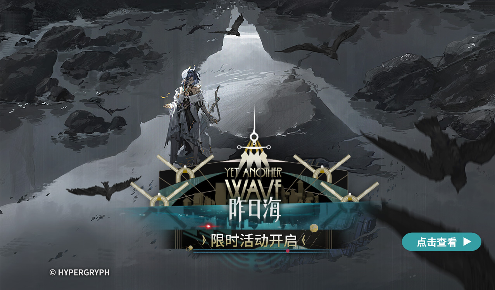

ARKNIGHTS
RHODES ISLAND
HTTPS://AK.HYPERGRYPH.COM/
 SCROLL ⌄
SCROLL ⌄
SCROLL ⌄

RHODES ISLAND ://
PROFILE
KAL'TSIT
凯尔希
CHARACTER VOICE日笠阳子
罗德岛最高管理者之一，阿米娅的直接辅导者。
罗德岛医疗部门的总负责人。
作为罗德岛的老成员，凯尔希医生是在阿米娅背后最稳固的援护者。
OFFICIAL OPERATOR ARCHIVE / 本地保留 3 位干员与 2 个精英阶段
SCROLL ⌄WORLD
指针经过点阵会推开粒子；移动或离开后回聚。
SCROLL ⌄ABOUT TERRA
ABOUT TERRA
泰拉万象
请选择您要查看的内容HTTPS://AK.HYPERGRYPH.COM/
 ◩ VIDEO
◩ VIDEO